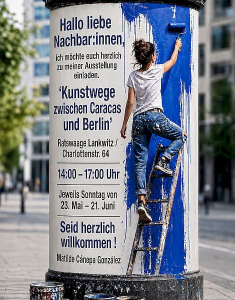

Studio Journal

Artistic Paths Between Caracas and Berlin
Hello dear neighbors,
I warmly invite you to visit my exhibition.
My name is Matilde Cánepa González. I am a multidisciplinary artist from Venezuela, currently living in Berlin. For over 30 years, I have combined influences from Latin America and Europe in my work—spanning painting, artist books, and sculpture. This exhibition, titled “Artistic Paths Between Caracas and Berlin: Encounters Between Painting and Book Art,” reflects this ongoing dialogue.
I look forward to meeting you, sharing conversations, and enjoying an afternoon of art, colors, and tea or coffee together.
Location: Ratswaage Lankwitz, Charlottenstr. 64
Every Sunday, 23 May – 21 June 2026
from 2.00 pm to 5.00 pm
Information on workshops is available at
nebenan.de/feed/events

Fragment of a Memory
My latest work – a fired ceramic piece on a column-like base – a
unique piece – a fragment of a memory of mine that I thought had
long been forgotten.
Like a relic unearthed from an inner landscape, this work bears
traces of a forgotten language. Its ceramic surface reveals signs,
impressions and traces that seem to hover between memory and
imagination. Resting on a dark metal column, the fragment becomes a
vessel for that which persists beneath conscious memory. It is not
the memory itself that returns, but its residue – altered by time,
yet still capable of speaking through texture, form and material
presence.

The Magic of Totems
A totem is an archetypal symbol expressing the profound connection between human beings and nature—manifested through animals, plants, mountains, rivers, or springs. It reflects an awareness of our belonging to the natural world, rooted in the collective unconscious and the transpersonal dimension of human experience.
In today’s technologically mediated world, this awareness is increasingly fading, and with it an essential source of spiritual depth and individual creativity.
As symbolic forms, totems mediate between the collective unconscious and individual consciousness. Across cultures, this understanding has been preserved through myth, ritual, and totemic imagery.
In my artistic practice, the motif of the totem appears as a recurring symbolic structure. Through paintings and sculptural forms, I explore the relationship between archaic memory, inner experience, and the spiritual dimensions of nature. My work evokes universal archetypal energies and seeks to make the primal and the transpersonal tangible through contemporary art.
Any questions? · Simply get in touch
Get in touch with me